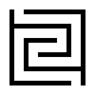

My readings
Recently read
- No One Is Too Small to Make a Difference | Greta Thunberg
Currently reading
- Prefigurative Politics: Building Tomorrow Today | Paul Raekstad & Sofa Saio Gradin
My experiments
Maze generator
JavaScript
Learning must never stop. — Xunzi
Hi, I'm Shion. I'm a lifelong learner, creator and volunteer with a passion for making the world a better place. I'm also interested in languages, coding, worldbuilding and science fiction, among other things. Welcome to my online laboratory.
JavaScript